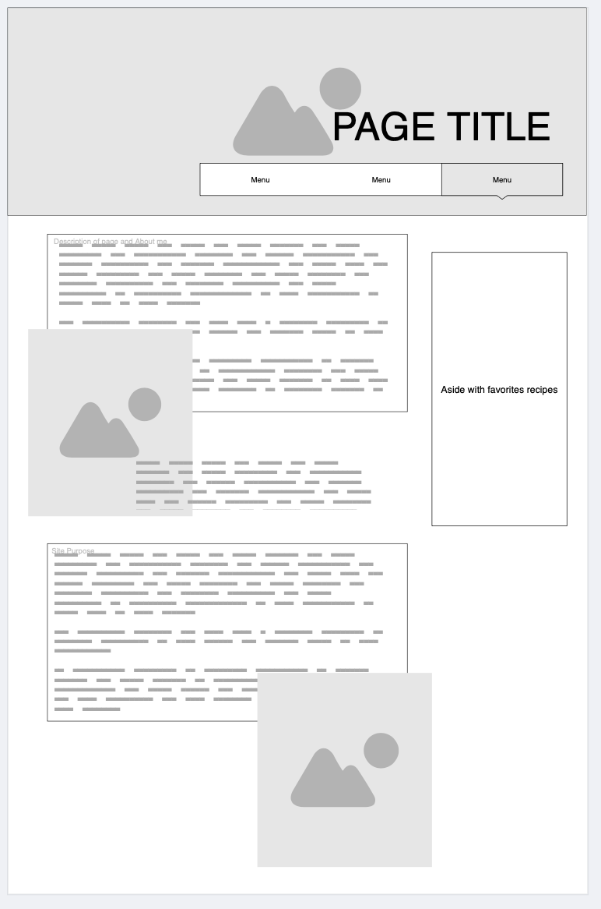

Cultura, Cariño y Comida
This name is literally all about who I am and how I try to raise my daughter. Full of her Puerto
Rican culture, love and of course, food!
Site Purpose
This blog takes you through cooking moments I share with my three year old, my all time favorite
Puerto Rican recipes so you can try at home, as well a little about our culture outside of food.
Scenarios
- What influenced Puerto Rican cooking?
- Why did I want to try cooking with my 3 year
old?
Color Schema
Used on page
Primary: #004D40
Secondary: #FFB74D
Accents: #4DB6AC, #009688, and #FF6F61
Typography
Merriweather: main font used in header, footer and h1
Raleway: used in body
Wireframe
